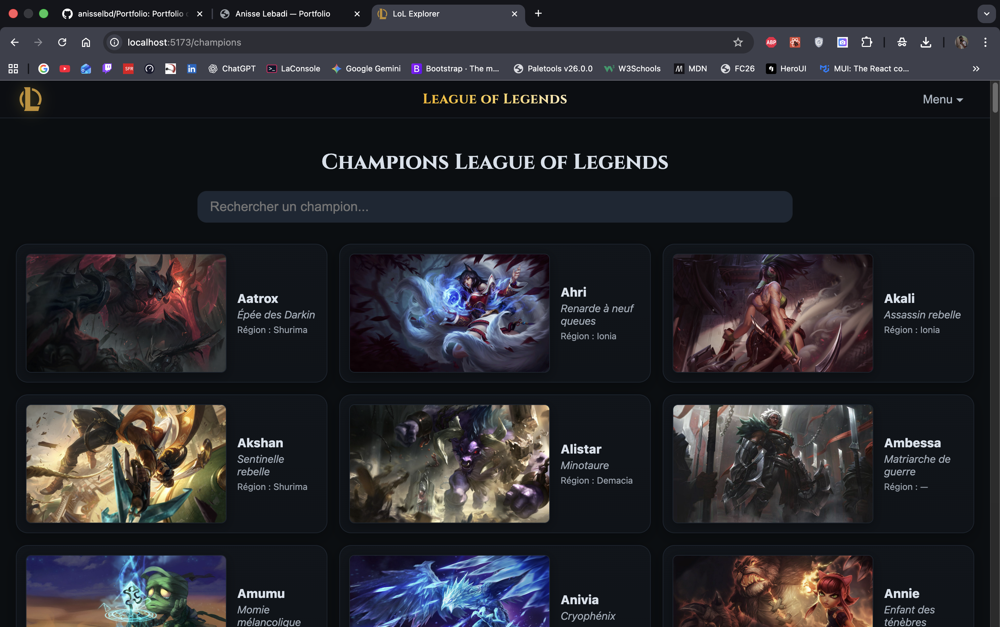
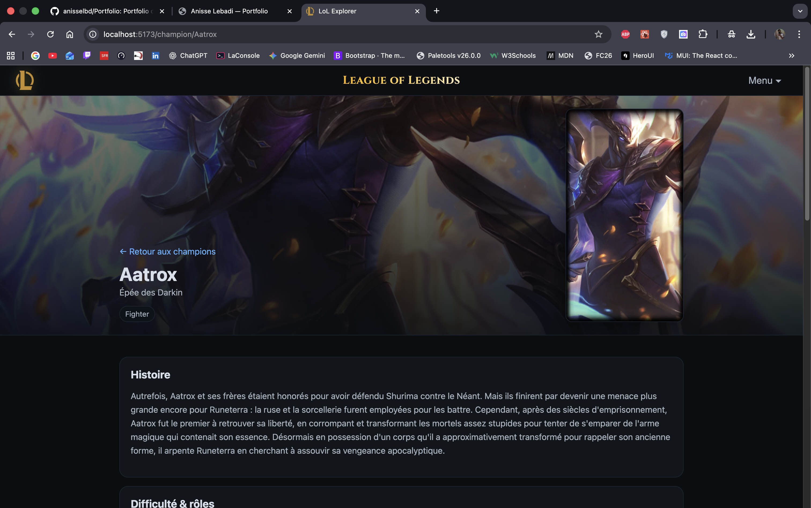
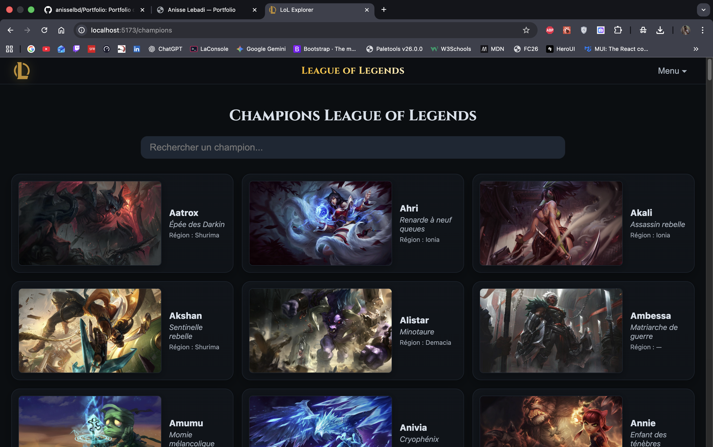
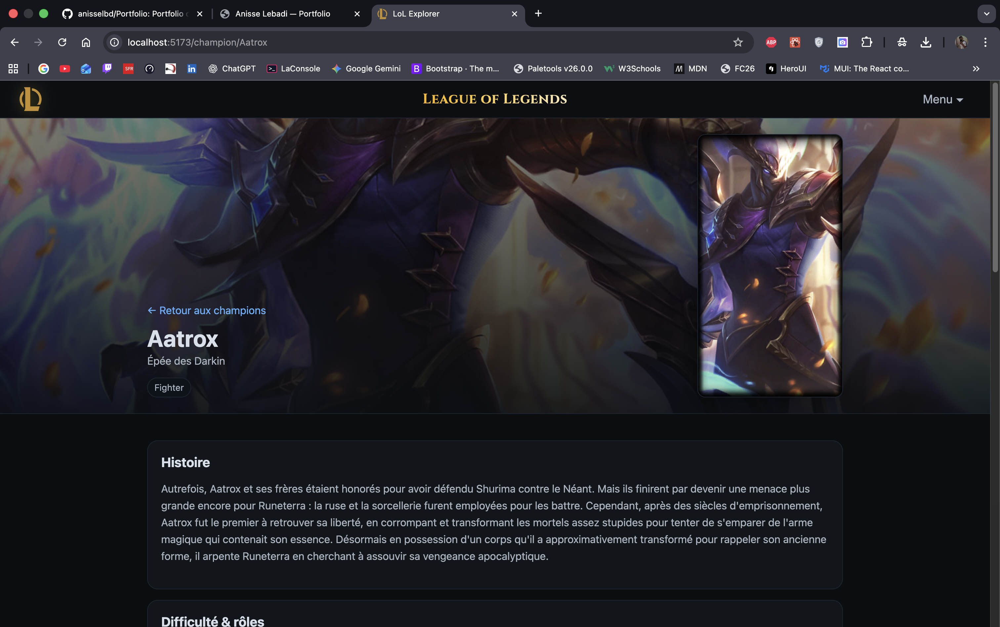

League of Legends Explorer
Une application web pour explorer les champions, objets et régions de League of Legends avec quiz interactif et tracker de statistiques.
 



Fonctionnalités
- Liste des Champions : Tous les champions avec détails complets
- Objets du jeu : Catalogue complet des items avec stats
- Régions de Runeterra : Exploration des différentes régions du lore
- Quiz interactif : Testez vos connaissances sur LoL
- Navigation fluide : Interface intuitive entre les pages
- Tracker LoL : Statistiques de joueurs en temps réel (à venir)
- API Data Dragon : Données officielles de Riot Games
- Responsive : Adapté à tous les écrans
Technologies
Détails techniques
League of Legends Explorer est une application React moderne développée avec Vite comme outil de build, offrant des performances optimales et un temps de démarrage ultra-rapide. L'application utilise l'API Data Dragon de Riot Games pour fournir des informations exhaustives sur l'univers de League of Legends avec plus de 160 champions, leurs compétences, statistiques et splash arts officiels.
L'architecture repose sur React Router DOM pour une navigation fluide entre les pages (Champions, Objets, Régions, Quiz). Les hooks React personnalisés comme useChampions permettent une gestion d'état efficace et réutilisable. Le catalogue d'objets affiche tous les items du jeu avec leurs effets et statistiques, tandis que la section Régions explore les zones de Runeterra avec leur lore.
Le projet est testé avec Jest et testing-library pour garantir la fiabilité du code. L'interface utilise du CSS natif pour un design inspiré de l'esthétique League of Legends. Le quiz interactif teste les connaissances des joueurs avec un système de scoring dynamique. La fonctionnalité de tracker permettra prochainement de suivre les statistiques d'un joueur en temps réel.
Défis relevés
- Architecture React : Conception d'une application modulaire avec hooks personnalisés
- API Data Dragon : Intégration et parsing des données complexes de Riot Games
- Performance Vite : Optimisation du build et du chargement pour 160+ champions
- React Router : Navigation fluide multi-pages avec state management efficace
- Quiz dynamique : Système de questions/réponses avec scoring et feedback visuel
- Tests automatisés : Couverture de tests avec Jest et testing-library
- Design thématique : Interface fidèle à l'univers de LoL en CSS natif
- Préparation API Riot : Architecture prête pour l'intégration du tracker de stats
À venir
Le projet continue d'évoluer avec l'ajout prévu d'un tracker LoL qui permettra de suivre les statistiques d'un joueur en temps réel : classement, historique des parties, champions favoris, taux de victoire, et plus encore grâce à l'API officielle de Riot Games.